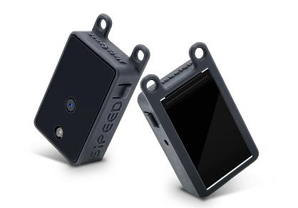
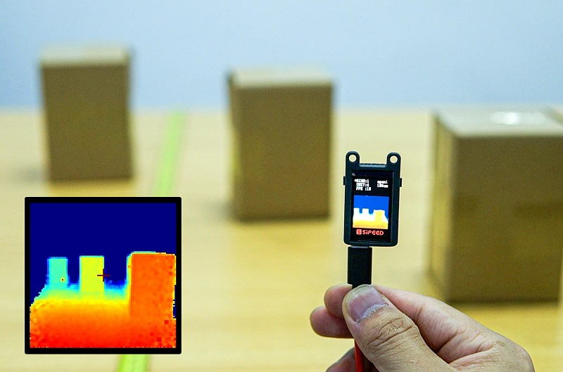
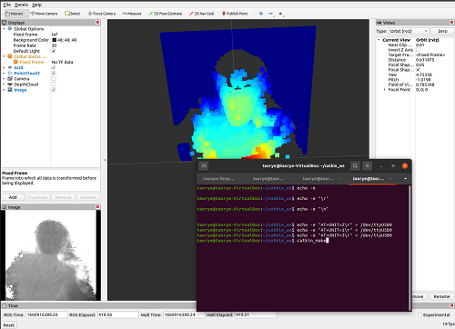

中文
中文MaixSense-A010
| 时间 | 负责人 | 更新内容 |
|---|---|---|
| 2022.09.10 | lyx | 初次编写文档 |
| 2022.11.12 | lyx | 补充细节 |
产品概述

MaixSense-A010 是 SIPEED 推出由 BL702 + 炬佑 100x100 TOF 所组成的 3D 传感器模组，最大支持 100x100 的分辨率和 8 位精度并自带 240×135 像素的 LCD 屏可实时预览 colormap 后的深度图。
资料汇总
产品开箱指南
准备工作
MaixSense-A010 采用串口协议对外提供接口以及传输数据。
我们提供的物理接口有 type-c（虚拟串口）及 1.0mm 4pin 母座（UART）都能获取深度图数据用于集成.
- 产品接线说明
通过 type-c 接口连接 PC 端后，可以识别到 /dev/ttyUSBx（Linux）或 COMx（Windows).
还可通过 usb2ttl 模组按照硬件引脚图（设备屏幕正面朝下）连接 4pin 母座。

| MS-A010 | TX | RX | GND | 5V |
| usb2ttl 模块 | RX | TX | GND | 5V |
上电互动预览
按键功能：左侧为“下一个”右侧为“切换”.
屏幕显示：屏幕中心的 + 字是测距点，右上方会实时显示 xx cm 代表测距的距离。如镜头前近处有大面积物体时屏幕右上会显示 “block!”而其他情况为 “open!”.
将设备接入电源后，可在设备上自带 LCD 屏实时预览 color map 后的深度伪彩图。

PC 互动预览
在 PC 端上预览修改配置前需要先安装上位机软件 COMTOOL.
COMTOOL/Windows 系统：点击下载
COMTOOL/Linux 系统：需用户自行编译/点击跳转
注意：Win 7 及以下系统需装驱动，可自行前往 FTDI 官网下载。
打开 COMTOOL 软件后选择 Graph 界面，如果软件上方无 Graph 的话可在右上角 + 号处添加 Graph，创建后若居中部分为白无图，则双击左下角 MaixSenseLite 即可打开界面显示端口。
在左侧 Port 选择小的端口和对应波特率（任意选择高波特率），点击 open 后再勾选下方 USB 即可接收大量数据,左下角处会显示 Connected.

设定 Header 为 \x00\xFF 即可解析正确的图像数据并观察到深度图，可以直观感受二维平面图像上的深度。

互动配置说明
COMTOOL 上位机的配置控件说明
- Header：设置识别包头
- RawCMD：用户可以手动发送指令（USB 和 UART 串口行为相同）
- ISP：启动停止
- LCD：显示自带屏的开启关闭
- USB：串口传输深度图开启关闭
- UART：串口传输深度图开启关闭
- ANTIMMI：自动抗多机干扰开启关闭（易受干扰，关闭的效果都要更好些）
- Binn：可下拉设置 BINNING，Baud 设置 UART 波特率
- X、Y：设置坐标：D 左侧多选框开启后显示出该摄像头的距离。
- Unit：设置量化单位（16位量化到8位，比例缩小，设置太小的话会只能看清很近处的影像）
- FPS：设置出图帧率（不宜过高，根据对接设备的性能合理设置即可，减小帧率可以减少传输数据量）
- Ev：曝光间隙控制（最左代表 AE，其他是固定曝光时间）
案例：远近中物体实拍
设备自带 LCD 屏上电后可实时观察到远近中物体的深度值差异。
物体不同的放置位置形成距离的差异，设备捕捉到差异后转化为深度值并因距离的远近显示冷暖色调。

案例：检测人流
实时高精度，大分辨率的监测人流量走动的情况并且快速统计出数据。

例程源码暂时还未开源，待整理公开。
案例：键盘灯跟随
实现超酷炫的键盘灯跟随，设备实时跟踪手部的位置变化，再根据手部的位置映射键盘灯。
键盘灯相关代码支持：点击查看

案例：接入 MCU
因 MaixSense-A010 拥有强大的兼容性，可基于串口协议外接 K210 Maix bit 这样的 AIOT 开发板或树莓派之类的 Linux 开发板来进行二次开发，为了方便用户的使用我们开放接入例程。
点击查看 K210 Maix Bit 介绍
Maix Bit 是 sipeed Maix 中产品线的一员，基于嘉楠堪智科技的边缘智能计算芯片 K210 设计的一款 AIOT 开发板。以 K210 作为核心单元，功能非常很强大，芯片内置 64 位双核处理器，拥有 8M 的片上 SRAM，在Al机器视觉、听觉性能方便表现突出，内置多种硬件加速单元(KPU、FPU，FFT等)，总算力最高可达 1TOPS，可以方便地实现各类应用场景的机器视觉/听觉算法,也可以进行语音方向扫描和语音数据输出的前置处理工作。

Maix Bit 购买传送门：点击查看
Maix Bit 资料传送门：更多详细资料
Maix Bit 源码传送门：点击查看

二次开发：串口协议
可参考上方的案例：MS-A010 外接 K210 bit
Host USB 源码传送门：点击查看
MaixSense-A010 串口协议传送门：点击查看
二次开发：接入 ROS
接入 ROS1
1. 准备工作
运行 ROS 前我们要准备适用的环境：Linux 系统。
可使用虚拟机 virtual box 或者 vmware：点击获取
也可以自行安装双系统，安装方法请自行搜索或参考右侧：双系统安装教程
2. 安装运行
ROS 接入包：点击前往下载
#解压缩 sipeed_tof_ms_a010.zip，并进入目录
cd ros1
source /opt/ros/*/setup.sh
catkin_make
source devel/setup.sh
rosrun sipeed_tof_ms_a010 a010_publisher _device:="/dev/ttyUSB0"
#之后终端会持续刷新显示[sipeed_tof]: Publishing，即正常工作

3. 可自行在 RQT 查看帧率

4. RVIZ2 预览
打开 rviz2 后，在界面左下角的 Add->By topic->PointCloud2或/depth ->Image 添加 ->Display/Global Options/Fixed Frame 需要修改成 tof，才能正常显示点云，根据添加的内容，左侧会显示 Image 而中间则显示点云。

接入 ROS2
1. 准备工作
运行 ROS 前我们要准备适用的环境：Linux 系统。
可使用虚拟机 virtual box 或者 vmware：点击获取
也可以自行安装双系统，安装方法请自行搜索或参考右侧：双系统安装教程
如果环境同时安装了 ROS1，使用 ROS2 的话需要选额外择正确的版本。
ls /opt/ros
ros@ros-virtual-machine:~/Desktop$ ls /opt/ros
noetic rolling
2. 安装运行
我们提供了 ROS2 的接入功能包，用户需要在运行 ROS2 的系统上编译安装。
ROS 接入包：点击前往下载
#解压缩sipeed_tof_ms_a010.zip，并进入目录
cd ros2
source /opt/ros/*/setup.sh
colcon build #（如提示缺少colcon时需要sudo apt install python3-colcon-ros）
source install/setup.sh
ros2 run sipeed_tof_ms_a010 publisher --ros-args -p device:="/dev/ttyUSB0"
#之后终端会持续刷新显示[sipeed_tof]: Publishing，即正常工作
3. RQT 查看帧率

4. RVIZ2 预览
打开 rviz2 后，在界面左下角的 Add->By topic->PointCloud2或/depth ->Image 添加 ->Display/Global Options/Fixed Frame 需要修改成 tof，才能正常显示点云，根据添加的内容，左侧会显示 Image 而中间则显示点云。
